Lithiometry
The iPhone Aesthetic Battery Icon Experience for macOS
Join TestFlight Beta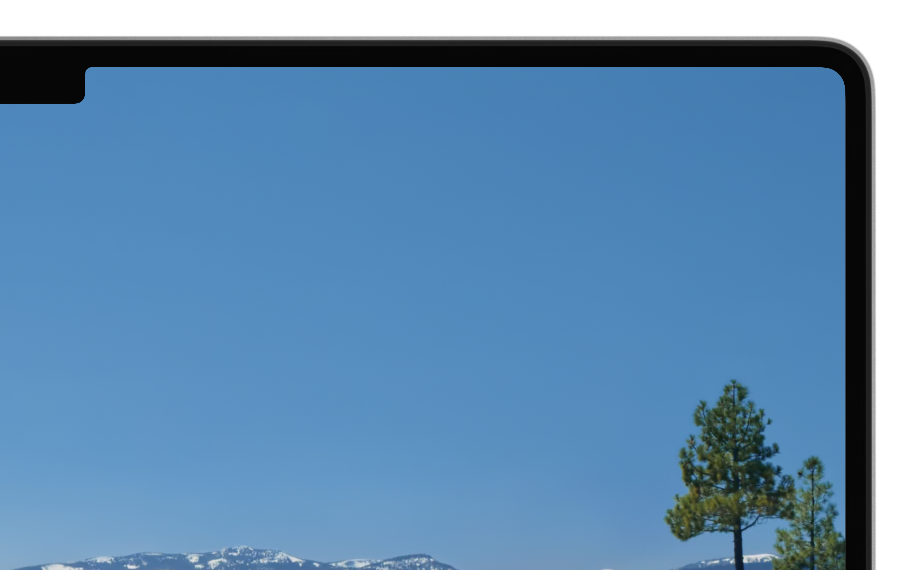
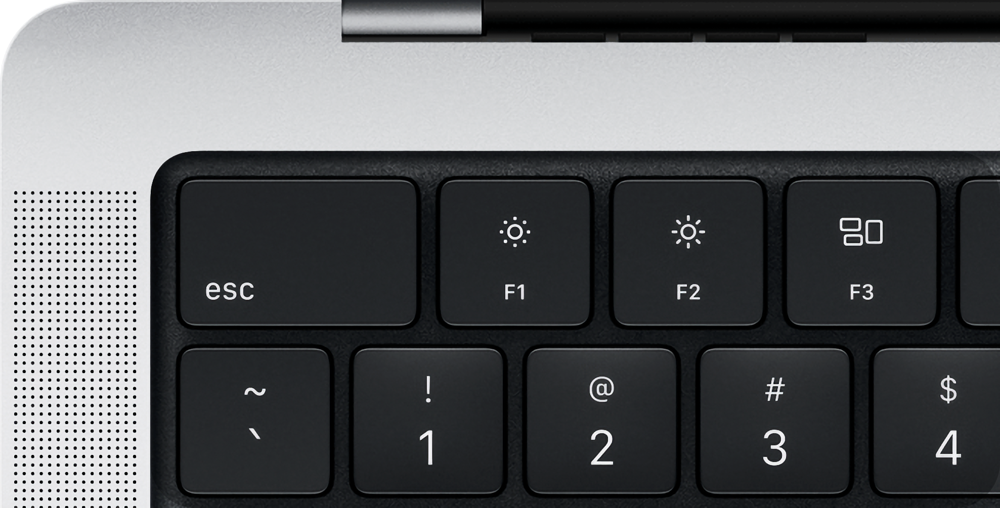
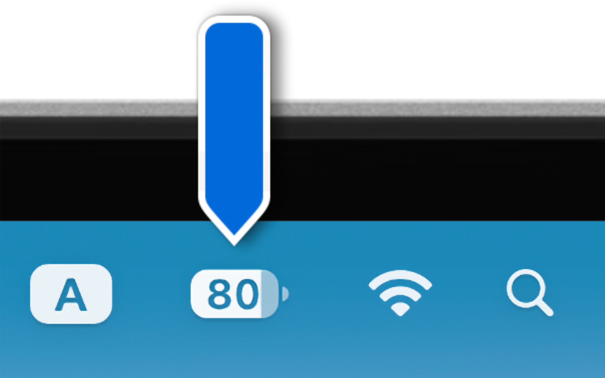
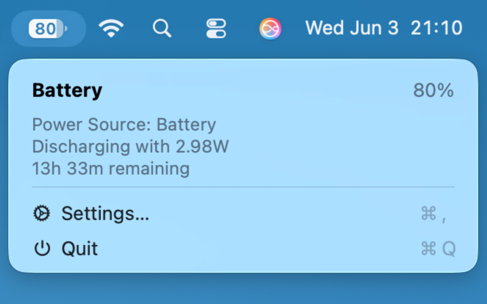
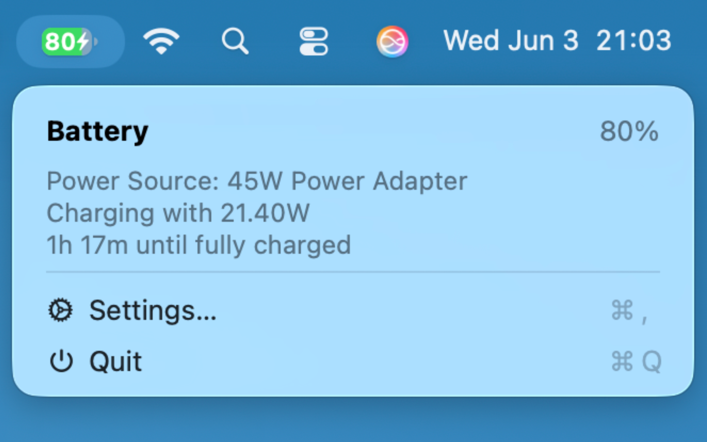
Real-time Battery Stats
Monitor your current capacity, wattage, and detailed adapter information at a glance. Always stay informed about your Mac's power usage.
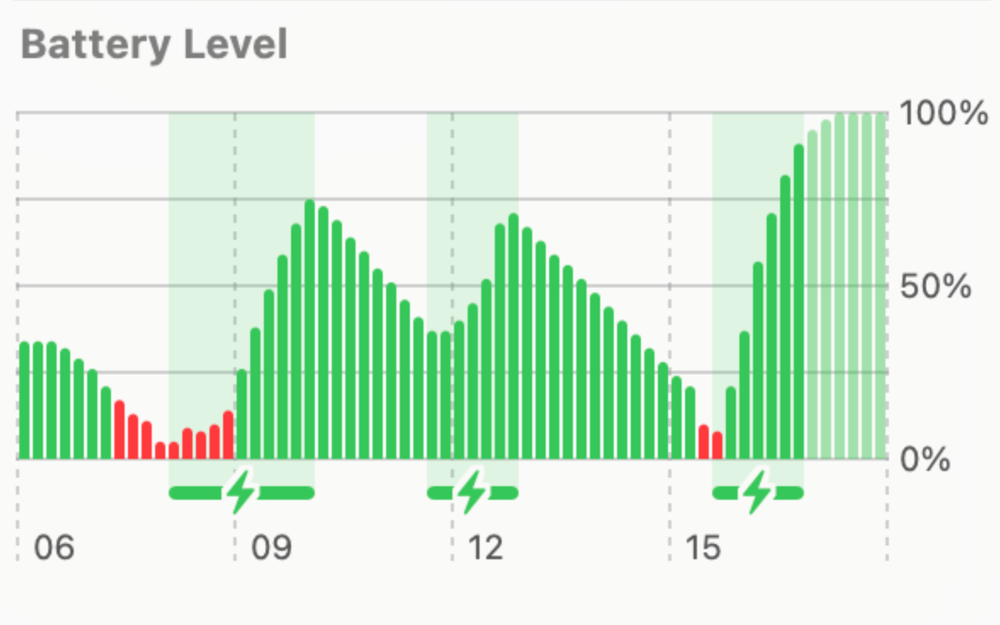
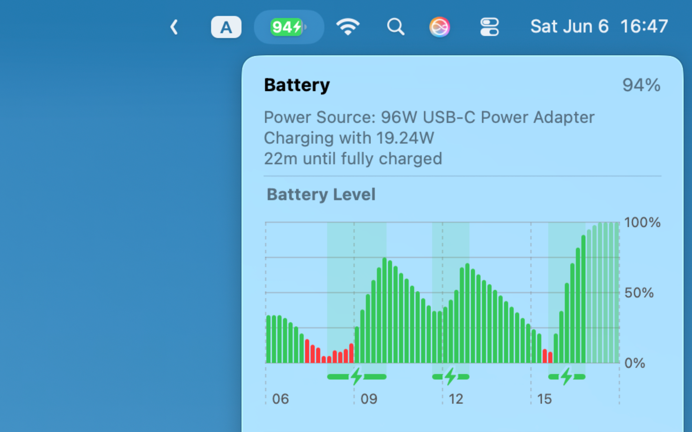
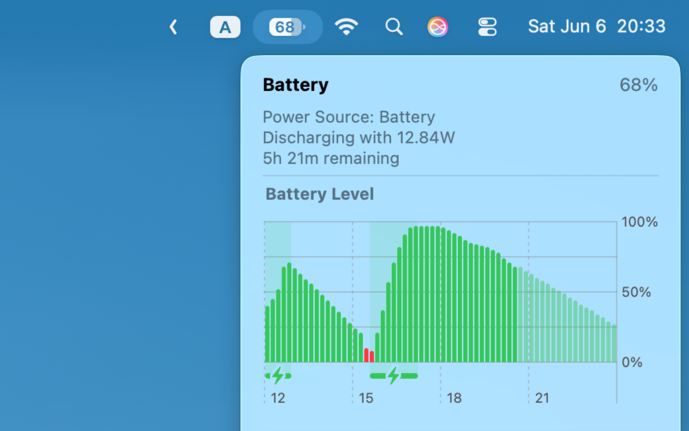
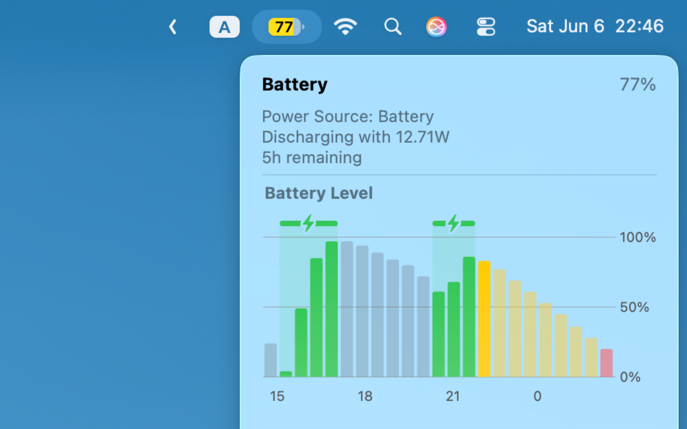
Beautiful History Graphs
Visualize your battery drain and charging cycles over time with native-looking iOS or macOS style graphs.
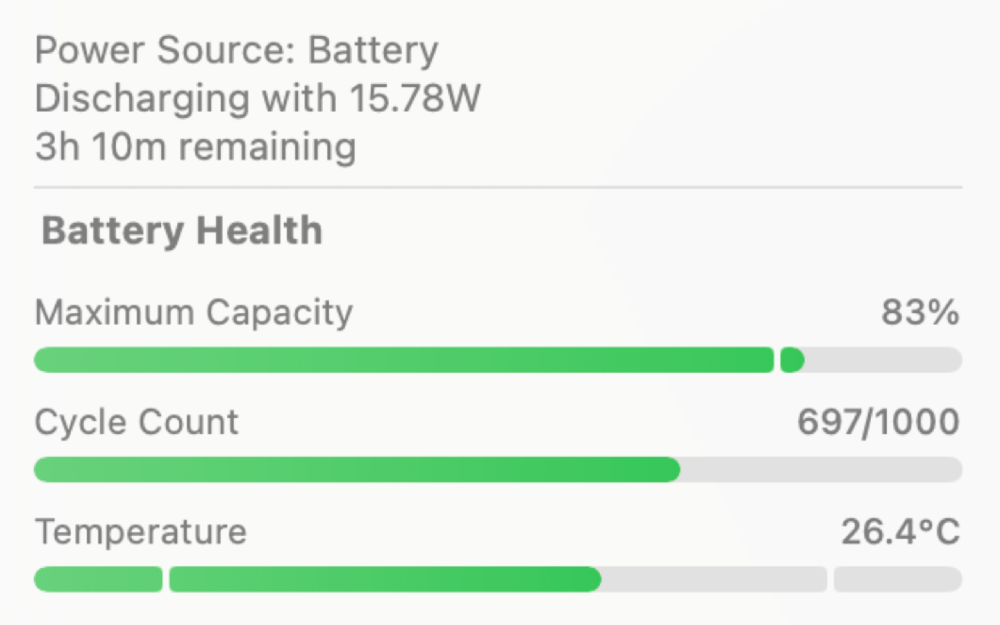
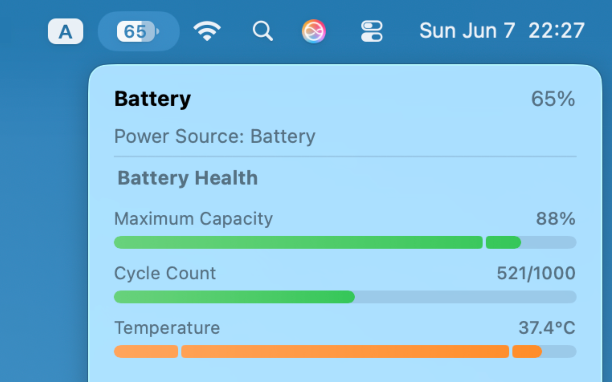
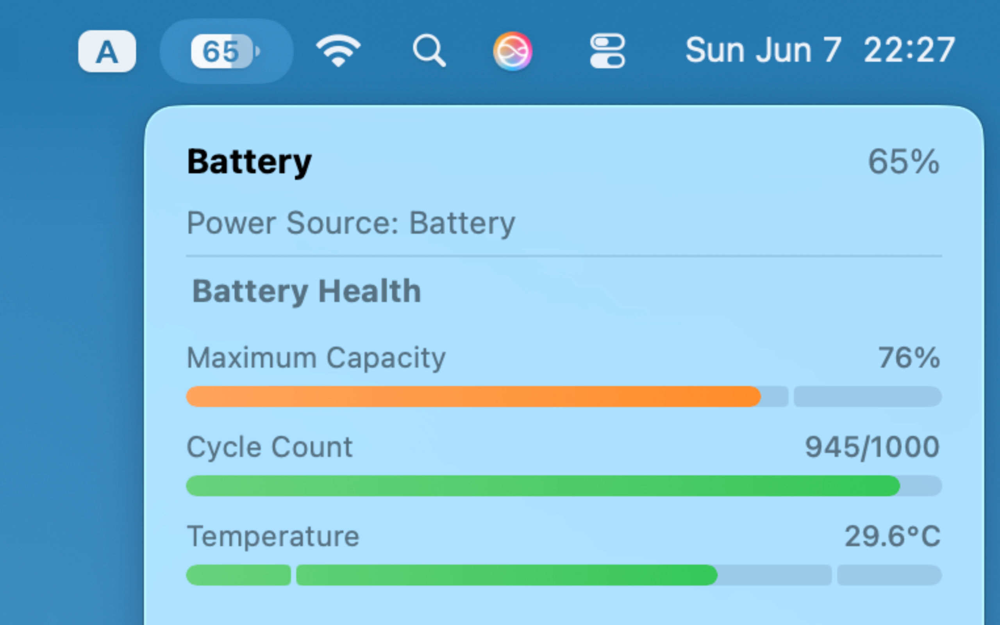
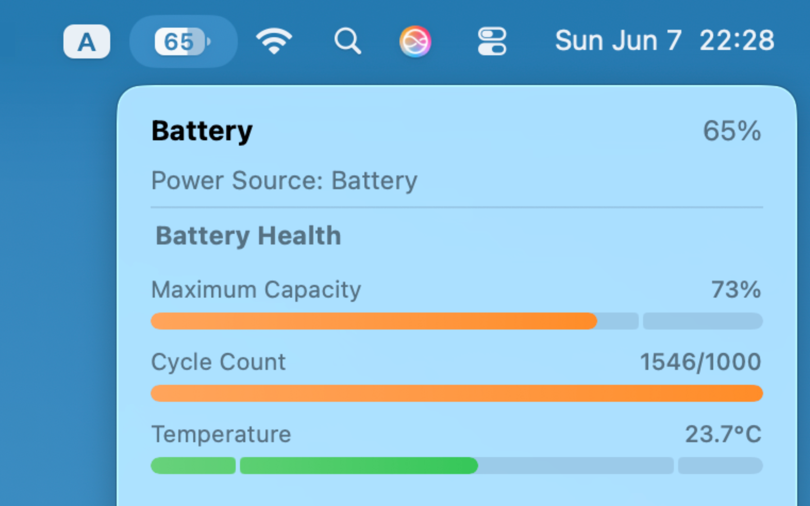
Deep Health Insights
Keep track of your cycle count, maximum capacity, and battery temperature to ensure your Mac stays healthy for years to come.

Highly Customizable
Personalize exactly what you see in the menu bar. Choose different color profiles, adjust low battery thresholds, and tweak the appearance to fit your setup.